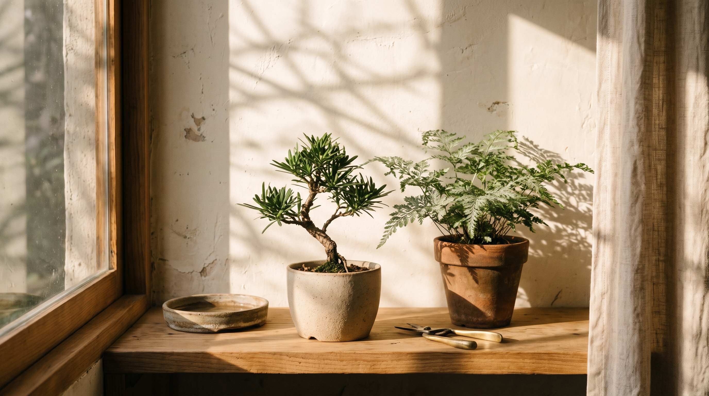

進入十一月下旬，東北季風帶來明顯降溫，白天日照時間也悄悄縮短。許多新手常在這個季節發現：明明跟夏天一樣用心照顧，葉片卻開始泛黃、垂頭甚至掉落。其實，這往往不是生病，而是植物進入「半休眠期」的生理訊號。
氣溫降到 20°C 以下後，多數觀葉植物與小品盆景的新陳代謝會明顯放緩，水分蒸散速度大幅下降。如果維持夏季的澆水頻率，盆土長時間濕冷，極容易引發「寒害型爛根」。
台灣冬季的平地低溫多半不會凍死室內植物，真正致命的殺手其實是「冷風直吹」與「劇烈溫差」。當寒流來襲、氣溫驟降至 13°C 以下時，陽台迎風面的熱帶觀葉與多肉容易瞬間凍傷黑化。
| 植栽類型 | 建議過冬位置 | 寒流重點提醒 |
|---|---|---|
| 松柏與落葉盆景（黑松、真柏、紅楓） | 採光良好的半戶外陽台 | 需適度低溫感受季節變化，僅須避開強風吹倒與盆土乾透。 |
| 寵物友善觀葉（銀脈鳳尾蕨、小葉羅漢松、竹芋） | 室內窗邊明亮散射光處 | 晚上拉上窗簾隔絕玻璃輻射冷氣，避免葉片緊貼冰冷窗面。 |
| 多肉與小型塊根（水晶姬玉露、熊童子、酒瓶蘭） | 室內南向或東向窗台 | 秋冬為部分多肉生長期，但寒流期間務必「斷水保溫」，乾燥比濕冷更耐寒。 |
冬季太陽角度較低，光線比夏季溫和許多，原本怕曬傷的耐陰觀葉植物，在冬天反而可以稍微往窗邊靠近 30～50 公分，補充珍貴的冬日暖陽。建議每週將盆器旋轉 90 度，讓枝葉受光均勻，避免植株為了追光而長歪徒長。
嚴選耐陰好養、毛孩安心的室內植栽與透氣赤玉土資材
瀏覽寵物友善植栽 選購透氣介質與澆水壺目前沒有選購植物